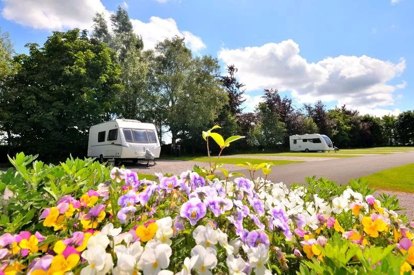

Longnor Wood named AA Campsite of the Year for Heart of England
Our FIVE-STAR camping and glamping site in the Peak District has been named the AA Heart of England Campsite of the Year.

Longnor Wood Holiday Park, near Buxton, picked up the award in the AA’s annual Caravan and Camping Awards which celebrate the UK's best campsites and caravan parks.
The award-winning adult-only site was described by the AA as a ‘hidden gem’ where guests can expect ‘a warm, friendly welcome and a high standard of customer care’.
The accolade for Longnor Wood follows the site’s national success when it was named the UK’s Best Adult Only Site by Campsites.co.uk in its 2023 Camping and Glamping Awards.
Sam Kitchen, who is manager of the site, said: “It’s such an honour to win this award, especially when you consider how many brilliant tourism businesses are based in our region. The success of the site is thanks to the passion and dedication of the entire team, who work really hard to ensure our guests have a brilliant time with us. Many of our guests are repeat visitors because they love the site and its location so much.”
The winners of the AA Caravan and Camping Awards 2024/2025 were announced on Friday, November 8 at an online awards ceremony which coincided with the publication of the 2025 AA Caravan & Camping Guide. The winning sites are selected by AA inspectors for their outstanding overall quality and high levels of customer care.
Simon Numphud, Managing Director at AA Media, said: "As local travel continues to grow and sustainable tourism gains momentum, we are excited to announce the best camping and caravanning destinations for the upcoming year. This year's winners have demonstrated outstanding quality along with a strong dedication to eco-friendly practices and customer satisfaction, making them excellent options for UK travellers.”
Longnor Wood is rated five-star by the AA and holds an AA Gold Pennant rating, which is reserved for sites achieving a quality score of 90% or above from the organisation. The site was also proud to be voted best adult only site for the second year running by third party listing campsites.co.uk as well as taking the runner up title for best site in the East Midlands.
Press Links
- The 'hidden gem' adults-only Peak District campsite named one of the best in England
- Peak District camping and glamping spot named the best in England
- Peak District Camping & Glamping Site Wins Top Regional Award
- Peak District camping sites among nine awards winners in Derbyshire in nationwide search for the best
- Peak District camping and glamping site wins top regional award
- Top 2025 UK staycation spots revealed in AA Caravan & Camping Awards
- Peak District Camping & Glamping Site Wins Top Regional Award
- Top UK Staycations for 2025 revealed at Caravan & Camping Awards
- This Picturesque Peak District Glamping Site Surrounded By Woodland Has Been Named The Best In The UK
- Luxury Peak District lodges with hot tubs to stay at this winter
- Longnor Wood Holiday Park is named the UK’s best adult-only site
- Camping and Glamping Awards 2023: Discover Britain's 11 most incredible places to stay
< Previous Article WCF supports Cumbria Community Foundation’s Winter Warmth Appeal